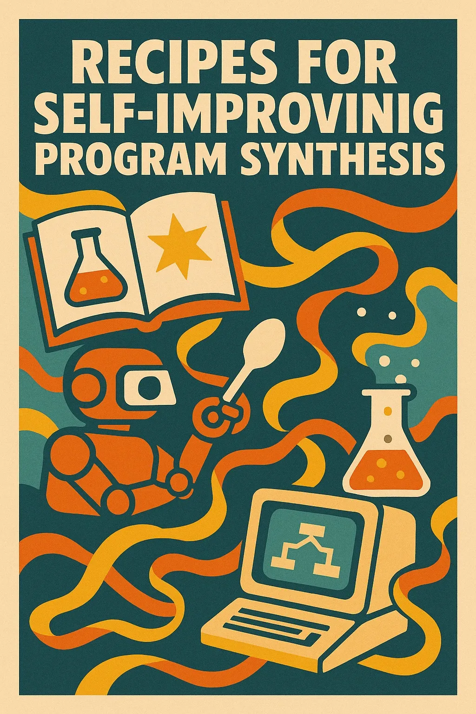

What is Agentic Engineering?
- It's what you make of it — an opportunity, an exploration
- Taking all the same things we did before and scaling them to guidelines, processes, and guardrails for AI agents
- Different types of agents as design elements: Goal-seeking, Reflection and Learning, Workflow-following
Agentic SW Engineering
Still solving problems with software.
Only now Intelligence is both a Tool and a Design Element
Thinking About Thinking
- How do smart groups of human experts organize complex work?
- What problem am I trying to solve? What outcome do I want?
- What is the thought process that gets me to a quality solution?
- Can I make that process into a tool?
- How do you build reliability into an untrustworthy system?

Prompts → Commands/Workflows
Patterns and Repeated Tasks → Code/Tools
- Workflow: Idea → Prompt → Issue → Worktree → TDD → PR → Code Review → Response
- Then: CI Iteration Loop
- Then: "Eliminate all stubs, TODOs, Faked APIs…"
- Next: build an e2e demo of user stories as a test for completeness

…skepticism is an asset
Across the arc of AI coding the last couple of years, I have never regretted starting over.
Letting go of the code you have but keeping the best ideas leads to learning new things.

Transitional Stage
- It is accelerating and there's no going back
- Vibe Coding is just a waypoint, the destination is Self-Improving Systems
- Keep putting more guardrails and feedback loops around your agentic coding tools
- Product requirements move into the system itself (they become part of the guardrails)
- Keep pushing the boundaries of what you can automate

How Can You Get Started?
- Grab Tools and SDKs
- Give your Agents Self-Reflection
- Build Up Patterns Upon Patterns

Let's Dive In! (Live Demo)
- Injecting Context
- Customizations
- Building Tools and Skills
- Reflection
How Claude Code (and others) Works
Event-Driven Agentic Loop — Claude responds to Events and can emit Events
- Session Start/Stop, User Prompt/Agent Stop
- Tool or Task I/O (Filesystem, Todo, Bash, Search, Fetch, Task)
- Claude can emit events which invoke hooks — user automation around the agentic loop
Reflection: Learn from how it's going
- UserPromptSubmit → Is the user frustrated?
- SessionStop → How did this session go?
- Use Claude to analyze the transcript
- Look for: Task Summary, Complexity, Corrections, Sentiments
- Derive: New Guidelines, Guardrails, Skills, Subagents, Tools
- Build tools that help you build tools
- Avoid recursion reflecting on reflection — use a semaphore
Injecting Context – Close the Loop
- Take learning from Reflection and Build it in
- SessionStart, SubAgentStart → context for every session
- UserPromptSubmit → context for every turn, or fetched relative to this turn
Customization
One tiny way to use learning is for deep customization.
Drive behaviors or tool use that is specific to your project or your preferences.
Building Guardrails
If you give specific guidance over and over, you should bake it in.
Building Tools, Commands, Agents, Skills
- Scripts/Tools: Deterministic steps with no semantic reasoning
- Commands: Instructions the agent can reason over (most workflows)
- Subagents: Prompts/profiles for specific behaviors and points of view
- Skills: Compilations of know-how, applied in targeted circumstances
What if you are building outside of Claude Code?
- Claude Agent SDK as a general purpose SDK
- Microsoft Agent Framework (autogen + SK) for workflow semantics
- What processes do you want to learn from?
- Where do you want to use what you learn?
- What loops allow you to collect, process, retrieve what you learn?
- Where do you need guardrails?